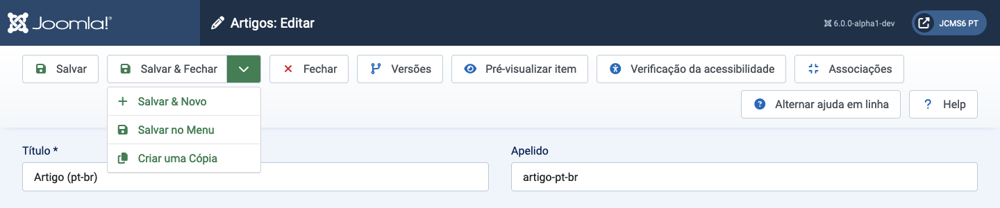
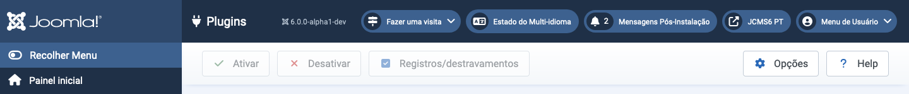

Barras de ferramentas estão presentes em quase todas as páginas do Administrador do Joomla!. Os dashboards são as exceções notáveis. Elas estão localizadas na parte superior da página, imediatamente abaixo da Barra de Título que contém o nome da página e vários módulos de Status, como a Versão do Joomla e o link para a Página Inicial.
Cada página tem um conjunto de Botões adequados ao seu propósito. Alguns são comuns, como Salvar, Cancelar e Ajuda. Outros são raros, como Reconstruir e Excluir Órfãos. Alguns estão sempre ativos. Outros estão inativos (cinza) até que uma caixa de seleção de item da lista seja marcada.
Se houver muitos botões, eles serão quebrados em duas linhas. Alguns exemplos:

Os botões sem um ícone de chevron para baixo operam imediatamente. Portanto, Salvar salvará a página e retornará com uma mensagem de confirmação verde ou uma mensagem de erro vermelha. Observe que, na maioria dos casos, o botão Cancelar fechará uma página de edição sem salvar nenhuma alteração.
Os botões com um ícone de chevron para baixo têm duas funções. Selecione o ícone e uma lista aparecerá, conforme mostrado na captura de tela acima. Isso permite a seleção de ações alternativas. Selecione o botão e essa ação será executada. Assim, Salvar & Fechar no exemplo da captura de tela.
Alguns botões só aparecem em determinadas circunstâncias. Por exemplo, o botão Verificação de Acessibilidade só aparece se o plug-in System - Joomla Accessibility Checker estiver habilitado. E Associações só aparece em sites multilingues.
Por favor, explore o que os vários botões fazem!

Neste exemplo de Barra de Ferramentas, os botões estão em cinza para indicar que estão inativos. Eles se tornam brilhantes e ativos quando uma caixa de seleção de item de Plugin é marcada, tornando-o pronto para Habilitar, Desabilitar ou Check-in. Vários itens da lista podem ser selecionados para ação simultânea, que é o objetivo principal desses botões da Barra de Ferramentas. Itens individuais podem ser processados com os ícones em cada linha (não mostrado).
Traduzido por openai.com